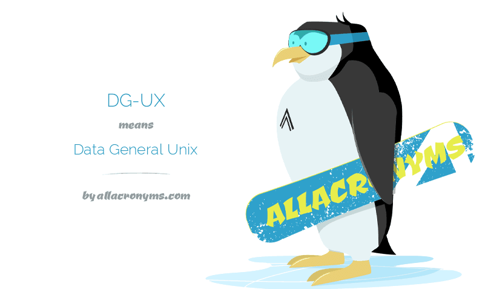
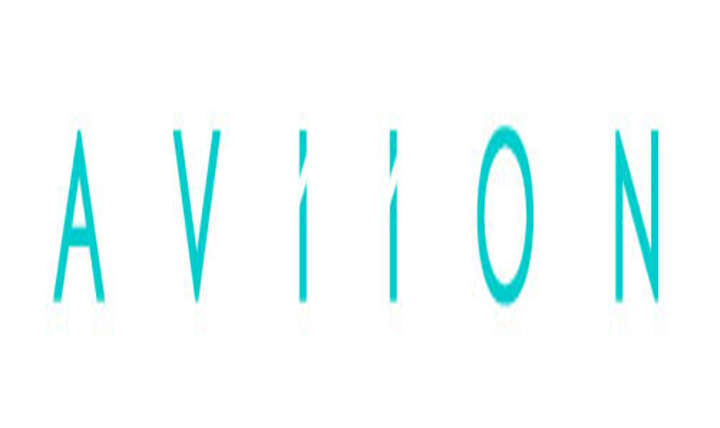

Tulajdonságok
Az Aviion platformon elérhető volt a többprocesszoros megoldás a többi Unix rendszerekkel ellentétben.
Ez az OS továbbá sokkal teljesebb volt, mint többi Unix-os társa, például tartalmazott teljes C fordítót (gcc), valamint logikai hangmenedzsert.
- Kicsi és kompakt volt, ellenben rengeteg funkciót tett elérhetővé.
- Egyszerű és könnyű volt installálni és nem követelt hatalmas memória vagy processzoros teljesítményt.
Érdekességképp, a rendszer fejlődése során, pontosabban, amikor kiadták a 4.00 verziót 1988-ban, már egy újratervezett, újraimplementált kernellel és fájlrendszerrel bocsátották piacra. A célja a DG-nek ezzel az volt, hogy növeljék a funkcionális lehetőségeket, és lehessen fejleszteni valamint futtatni többféle applikációt.
|  |
